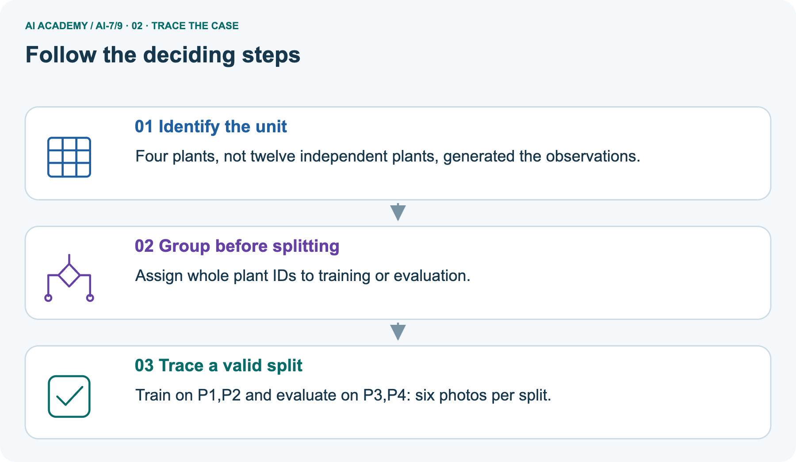
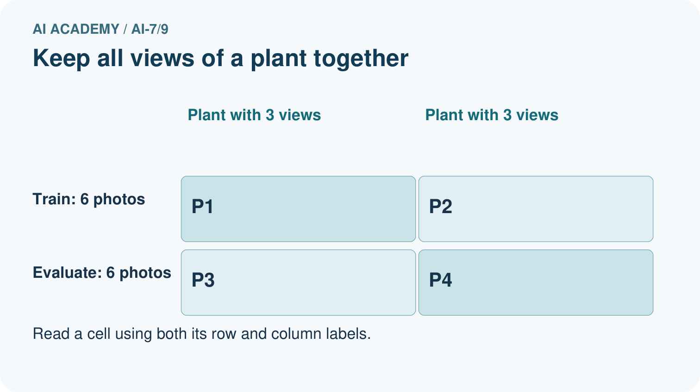
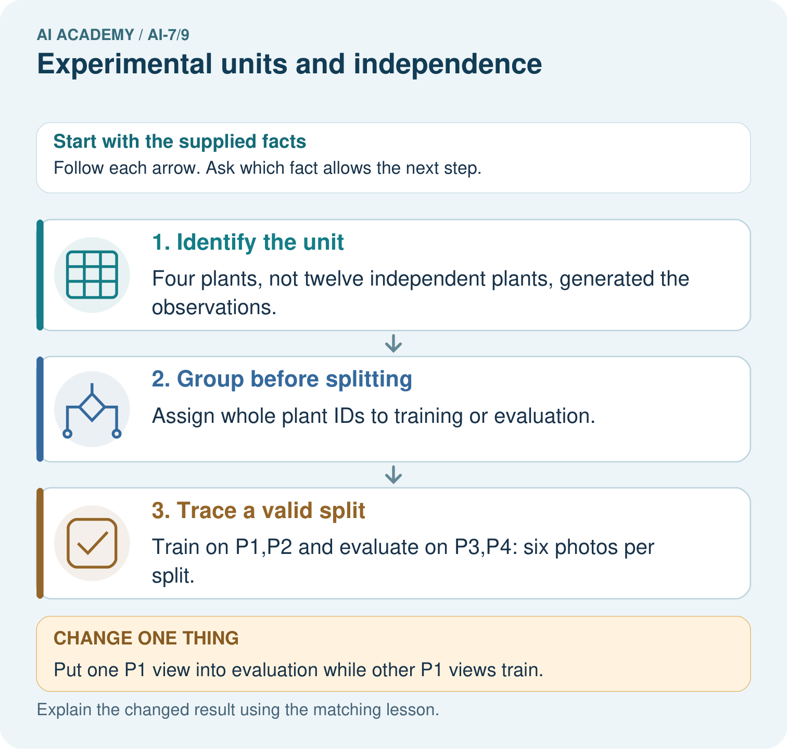
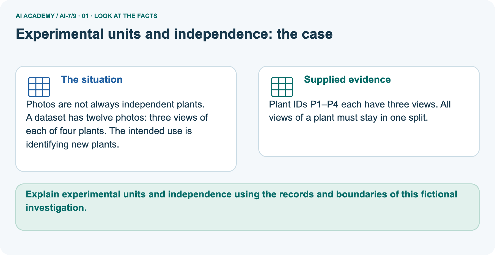
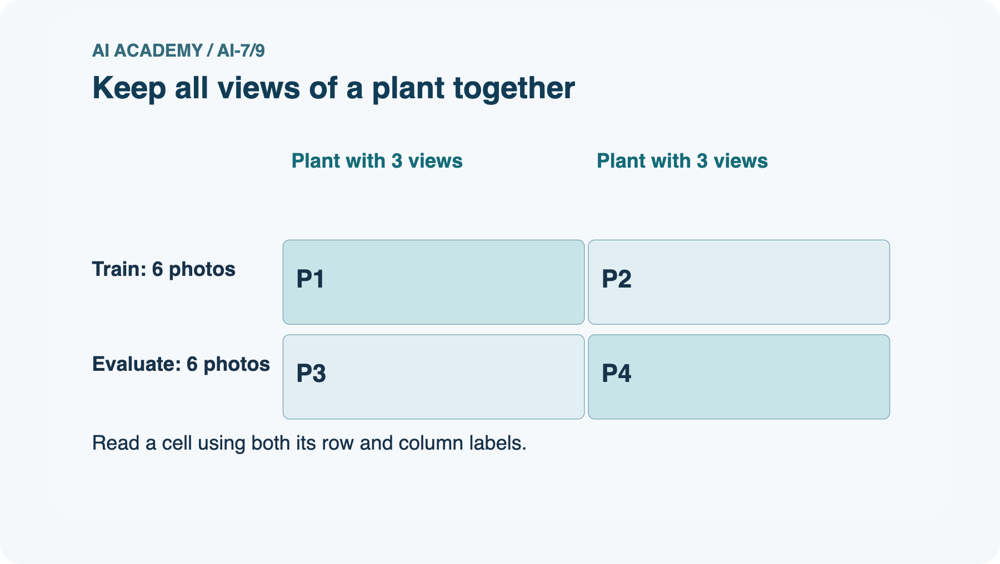
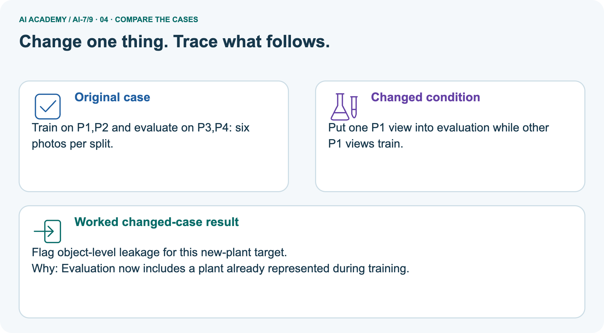
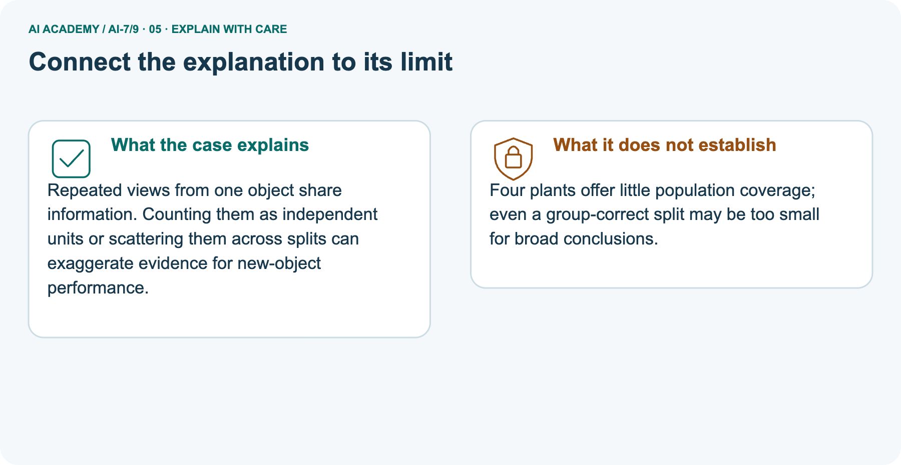

AI Academy · Level 7 · Grade 12 · Week 9 · Teacher guide
Experimental units and independence
Learn to understand, design, build, test and explain AI systems responsibly.
Project: Reproducible AI Research Study
THE CONNECTED WEEK
Ask what receives treatment, what was sampled and what each row measures.
Teach precise units and leakage checks with an authoritative definition and bounded metadata evidence.
Keep one habit: Model repeated-query count → group plant views → inspect moved-view leak → assess classroom assignment → retain independence/design assumptions.
Main lesson · Section 1
Prepare the connected research investigation
Keep modelling, shared practice and independent evidence distinct.
Target and main teaching plan
Primary target: Explain the mechanism and terminology of experimental units and independence
| Session | Sequence and minutes | Resources |
|---|---|---|
| Session 1 · Understand · 45 min | 0–7: recall and prerequisite; 7–15: inspect the concrete case and predict; 15–30: teacher models the worked trace; 30–40: learners explain a step using the text and visual; 40–45: check the core idea. | Use Your mission, Notice the evidence, See how it works, Words that unlock the idea and Follow a worked example; record the brief recall in the workbook. |
| Session 2 · Practise · 45 min | 0–5: retrieve the procedure; 5–15: W2 completion practice; 15–23: explain and check with a partner; 23–30: each learner answers the misconception check; 30–40: targeted reteaching or a harder variation; 40–45: prepare the investigation. | Use Find and repair a mistake, Practise together and Run the investigation, with workbook W2 and Individual reasoning check. |
| Session 3 · Investigate and transfer · 45 min | 0–5: retrieve the decision rule; 5–20: investigate or trace; 20–30: start the independent case; 30–38: connect the project; 38–43: act on feedback; 43–45: plan the return check. | Use Run the investigation, Build your understanding, Connect your project and Show what you know. Reserve further time for the full task set. Use a code example only where one is actually supplied. |
This is a starting allocation of 135 minutes, not a validated duration. Preserve all named topics. Schedule extra time for connected examples, the full investigation, independent cases and project building.
Repeated copies of a case share one recorded attempt; they are not new evidence.
Preparation and prerequisite
Lesson and workbook; paper and pencil
Calculator and optional local Python 3 for arithmetic; no live API or private data
Prepare the fresh retry separately and withhold its solution until after collection
A result depends on the inputs, procedure and conditions that produced it. Preserve data roles and distinguish observed outcomes from predictions or unmeasured conditions.
If the prior concept cannot be explained, use a short retrieval activity before this chapter.
Opening retrieval
Without opening the old lesson, explain one key idea from Baselines and fair comparisons. Give an example and a mistake that the idea helps you avoid.
Look for: Explain the mechanism and terminology of baselines and fair comparisons
Reference example, not the only acceptable wording: Teacher explanation: Fair baselines use credible procedures on matched evidence and resource conditions. A weak arbitrary reference can exaggerate improvement.
For a room-reporting study use manual authoritative lookup or a deterministic same-room rule, not random room names. Match cases, available sources and scoring.
Without opening the old lesson, explain one key idea from A literature comparison matrix. Give an example and a mistake that the idea helps you avoid.
Look for: Explain the mechanism and terminology of a literature comparison matrix
Reference example, not the only acceptable wording: Teacher explanation: A literature matrix compares studies using aligned columns rather than sorting headline numbers with different meanings.
Record question, data, unit, baseline, metric, split, resources and limitations. Mark incomparable fields rather than forcing a ranking.
Without opening the old lesson, explain one key idea from Finding primary research. Give an example and a mistake that the idea helps you avoid.
Look for: Explain the mechanism and terminology of finding primary research
Reference example, not the only acceptable wording: Teacher explanation: Primary research presents a study's own methods and results. A summary can help discovery but should not replace inspection of the original evidence.
Record title, authors, version, date, identifier and access location. Distinguish paper, code, data and commentary. Verify that a quoted claim belongs to the cited version.
Pictured end goal
Explain experimental units and independence using the records and boundaries of this fictional investigation.
Earlier wording, alternatives and picture transcripts
Teach the learning cycle
Retrieval answer guidance
Baselines and fair comparisons
A literature comparison matrix
Finding primary research
Compact alternative: two 45-minute sessions for the core explanation and W1–W5 only. The main plan uses three sessions; schedule further time for the complete investigation, project, visual journey and any code examples. An experimental unit is the entity assigned a treatment in the study design. Name sampling units and measurement units separately; repeated measurements from one unit may be related. Use the supplied constructed scenarios to make the mechanism inspectable. Collect W4 before sharing solutions. Students should name intermediate evidence and limitations; classroom pacing and learning effectiveness remain unvalidated.
Outcomes
Explain the mechanism and terminology of experimental units and independence
Apply the stated procedure to a new case with a traceable result
Identify an assumption or limitation and design a revealing follow-up
Preparation
Prerequisite answer
End goal for the pictorial case
This added worked case illustrates the week’s main idea. Retain all original and connected topics; schedule its practice within the teaching cycle.
Main lesson · Section 2
Teach unit definitions, repeated observations and group-disjoint evaluation
Keep treatment assignment, query comparison contexts and sampled plant identities distinct.
Definitions and complete fictional unit contract
An experimental unit is the entity assigned a treatment in the study design. Name sampling units and measurement units separately; repeated measurements from one unit may be related.
If methods are compared within each query, queries are paired units. Repeated runs within a query estimate run variation but do not increase the number of independent query contexts.
| Unit/design item | Complete fictional lesson rule |
|---|---|
| Experimental unit | Entity assigned a treatment in the design; do not automatically equate it with each measurement |
| Sampling/measurement unit | Name separately according to how entities enter the study and observations are collected |
| Main repeated-query case | Q1, Q2, Q3 each have four run records:12 measurements across 3 query contexts |
| Paired A/B comparison | Match each query across methods; actual assignment/randomization design must still be stated |
| Picture plant dataset | P1–P4 each generate three view records:12 photos, 4 plant IDs |
| Intended picture use | Assess new-plant behavior, so a plant ID cannot occur in both training and evaluation |
| Declared split | Train all P1/P2 views; evaluate all P3/P4 views:6 photos in each |
| Independence limit | Neither distinct IDs nor this group-disjoint split proves statistically independent sampling |
| Scope | Synthetic metadata only: no actual images, model training, classroom assignment or student response collection |
Main count ledger and checked reasoning
| Main query context | Recorded runs | Measurements added | Distinct context count |
|---|---|---|---|
| Q1 | Runs 1–4 | 4 | 1 |
| Q2 | Runs 1–4 | 4 | 1 |
| Q3 | Runs 1–4 | 4 | 1 |
| Total | Three groups of four | 12 | 3 |
| Claim of 12 independent queries | Confuses repeated observations with contexts | Unsupported | Dependence/design assumptions still need stating |
| Paired-method extension | Match A/B on each query | Do not invent how many records per method were supplied | Query context remains grouping for that comparison |
An experimental unit receives the treatment; name sampling and measurement units separately. Main: three query contexts with four runs each give twelve measurements, not twelve independent queries. Picture: four plant objects with three views each give twelve photos. Training on P1/P2 and evaluating P3/P4 gives six views per split.
Moving P1-v1 across leaves five training views, seven evaluation views and shared P1, so the new-plant split fails. Disjoint IDs do not prove independent sampling or broad generalization. Selected case: five classroom-level assignments produce one hundred student measurements clustered within those classrooms. The individual responses are not one hundred independent assignments.
All records are fictional metadata, not an actual student study.
Experimental units and independence — evidence trace
Guided: There are three query units and 12 run measurements. Do not analyse them as 12 independent queries. Qualification: Independence follows design and relationships, not row count. Exit: accept a concrete variation with its predicted outcome and a stated condition that would challenge the mechanism; reject a claim resting on unmeasured evidence.
Three queries each run four times produce 12 outputs.
There are three query units and 12 run measurements. Do not analyse them as 12 independent queries.
Compare the intermediate evidence with the final statement. Explain why each number or decision follows from the stated inputs.
The conclusion belongs to this scenario and procedure; changing the inputs, evaluation population or authority can change what it establishes. Retain the raw record so a later revision can be compared honestly.
Identity, leakage and independence probes
| Unit/independence probe | Expected interpretation |
|---|---|
| Four runs for one query | Four measurements, one query context |
| Three views of one plant | Three photos, one plant identity |
| Distinct filenames for the same plant | Do not establish independent plant samples |
| No plant ID shared across splits | Passes that group-disjointness check only |
| Same plant spans train/evaluation | Leaks object identity for the declared new-plant goal |
| Independent treatment applied to whole groups | Assignment units are groups; measurements within them remain clustered |
| Query method comparison within each context | Preserve pairing; actual randomization/sampling still needs specification |
| A more balanced photo count | Cannot repair shared plant identity by itself |
| Group-correct tiny dataset | No broad new-plant reliability or population independence guarantee |
Separate plant grouping, native diagram and complete split counts
Photos are not always independent plants. A dataset has twelve photos: three views of each of four plants. The intended use is identifying new plants.
Plant IDs P1–P4 each have three views. All views of a plant must stay in one split.
The picture is a separate plant-ID dataset. Four plant objects P1–P4 each have three views. For a new-plant goal, put all P1/P2 views in training and P3/P4 in evaluation:6 photos/2 plants in each, no shared plant IDs. Move P1-v1 to evaluation while P1-v2/v3 remain in training, and P1 now spans both sets.
Counts become 5 training views and 7 evaluation views, but the main problem is shared object identity, not unequal split sizes. This is leakage for the declared new-plant goal. Four distinct plants may still share environmental/sampling dependencies; the metadata split alone cannot establish independence or broad coverage.

| Separate picture state | Training | Evaluation | Shared plant IDs |
|---|---|---|---|
| Group-correct split | P1/P2:6 views | P3/P4:6 views | None |
| Move P1-v1 to evaluation | P1/P2:5 views | P1/P3/P4:7 views | P1 |
| Across either complete dataset | 12 total view records | 4 distinct plant IDs | Counts alone do not establish independence |
| Interpretation | Whole-plant grouping protects this split boundary | Four plants offer limited population coverage | No classifier performance is measured |
Picture trace and shared-P1 key



Read the picture one step at a time
Repeated views from one object share information. Counting them as independent units or scattering them across splits can exaggerate evidence for new-object performance.
Four plants offer little population coverage; even a group-correct split may be too small for broad conclusions.
Change: Put one P1 view into evaluation while other P1 views train.
Prediction: Flag object-level leakage for this new-plant target.
Reason: Evaluation now includes a plant already represented during training.
Primary definition reference and scope
Definition reference: NIST/SEMATECH e-Handbook, “A Glossary of DOE Terminology”, https://www.itl.nist.gov/div 898/handbook/pri/section 7/pri 7.htm. Its experimental-unit definition concerns the entity receiving a treatment combination. Use this to avoid silently equating assignment, sampling and measurement entities; no study assignment or statistical analysis is performed here.
Earlier wording, alternatives and picture transcripts
Begin by writing the question the procedure is intended to answer. Identify the information already supplied, the information it will produce and the information still missing.
These are constructed classroom examples; they do not require live accounts, private records or an external service. Do not treat a plausible explanation as a measured outcome.
Before applying the procedure, write its units, denominator or decision boundary where relevant. A partner should be able to repeat each step using the same inputs.
If a required input is absent or violates the stated contract, record that condition explicitly instead of quietly replacing it with a convenient value.
| Term | Meaning |
|---|---|
| Experimental unit | The entity independently sampled or assigned |
| Repeated measure | Another observation on the same unit |
| Clustering | Related measurements grouped within an entity |
Model the reasoning aloud
Use the complete worked example below before asking learners to complete W2. Reveal a small part, invite a prediction, then explain the deciding step.
These teacher notes contain solutions; do not reveal the independent case answer during modelling.
| Thinking move | Teacher prompt |
|---|---|
| Plan | What is given? What is the question? Which procedure fits these facts? |
| Do | Point to each input and intermediate step in the worked trace. Name the rule that allows the next step. |
| Check | Does the output answer the question? Which assumption or limitation prevents a larger claim? |
Use the diagram and verbal explanation together. Ask learners to match a sentence to a specific visual step; do not assign learners fixed visual or auditory learning styles.
A pictorial worked case: Experimental units and independence
The facts we will use






Why this result follows
What this example does not establish
Change one thing in the pictured case
Ask while showing the picture
Cover the result. Ask learners to name the inputs and predict the next step. Uncover one step, connect the icon to the actual procedure, and explain its evidence. Then change the supplied condition and compare.
The picture is a representation; it does not document execution of a real AI model.
Main lesson · Section 3
Model a step,then remove help
Collect each learner’s reasoning before showing a key.
Current completion task and checked reasoning
Completion task: Three queries each run four times produce 12 outputs. Show the intermediate steps and give the conclusion with its scope.
Teacher check: Teacher explanation: There are three query units and 12 run measurements. Do not analyse them as 12 independent queries.
Start by identifying the given inputs together. Leave the intermediate steps blank. If needed, model one step, then withdraw that help on the next step. Move to a full trace only when the partial trace is understood.
For partners, alternate explainer and checker; collect a response from every learner before discussion.
Individual misconception check
Use the worked case for Experimental units and independence. Proposed explanation: “The worked result establishes every future case”. Decide whether this explanation is supported.
Point to the step or supplied fact that decides; explain your repair if needed.
Expected correction: Independence follows design and relationships, not row count.
Collect explanations, not only yes/no votes. If a misunderstanding is common, re-model the relevant step for the class.
If it affects a few learners, give a short targeted group explanation while others solve a more demanding variation.
Pictured reasoning and changed case
Count distinct plant units and photo views, and state the independence assumption. Construct the stated group-correct split, then explain why placing a P1 view in evaluation creates leakage for the new-plant goal.
Four plants, not twelve independent plants, generated the observations. Assign whole plant IDs to training or evaluation. Train on P1,P2 and evaluate on P3,P4: six photos per split.
Changed case: Flag object-level leakage for this new-plant target. Evaluation now includes a plant already represented during training.
Changed-case reasoning: Flag object-level leakage for this new-plant target. Evaluation now includes a plant already represented during training.
Collect each learner’s explanation before discussion. Use the first missing connection between input, deciding step and result to choose support. This question is worked-case practice, not fresh mastery evidence.
Accessible support and extension
Use the worked example in Sections 3 and 6. Collect a prediction before revealing its result; ask the learner to point to each intermediate fact.
Provide an input/procedure/result/limit frame and a calculator when needed. Ask students to identify the first step before completing the whole trace.
Extension: compare two concrete variants of this mechanism while holding unrelated conditions fixed; report both successful and unsuccessful outcomes.
Earlier wording, alternatives and picture transcripts
| Time or stage | Teacher action |
|---|---|
| Session 1: 0–7 minutes | Retrieve the prerequisite; identify the input, procedure and evidence source. |
| 7–18 minutes | Explain See how it works and Words that unlock the idea. Complete W1 with a mechanism-based explanation. |
| 18–32 minutes | Trace the declared procedure and worked case. Complete W2, recording intermediate steps. |
| 32–45 minutes | Discuss the diagram with the worked input; use W3 to distinguish measured claims and limitations. |
| Session 2: 0–8 minutes | Retrieve the worked reasoning and collect the guided response before discussing it. |
| 8–20 minutes | Compare a proposed boundary variant with the original case; identify what remains fixed. |
| 20–35 minutes | Collect W4 independently. Require the procedure trace and the bounded conclusion. |
| 35–45 minutes | Use W5 and exit responses for feedback. Administer the fresh retry after feedback and preserve both attempts. |
Reduce help deliberately
Individual reasoning check
Pictorial practice question
Reasoned teacher answer
Main lesson · Section 4
Run the complete supplied investigation
Separate predictions,actual runs and paper traces.
Complete inputs,expected results and limits
Main: three query contexts generate twelve measurements. Picture: four plant objects generate twelve views. A valid six/six-view split has no shared plant IDs; moving one P1 view gives five/seven and object leakage for the new-plant goal. These checks do not establish independence or model accuracy.
Selected case: five classroom assignment units generate five times twenty, or one hundred student measurements, clustered within classrooms. They are not one hundred independent assignments. State the design assumptions and do not claim a real student study.
Diagnose the current misconceptions
The worked result establishes every future case: Independence follows design and relationships, not row count.
A missing input may be replaced without recording the change: A replacement changes the evidence or contract. Record the change and its justification; do not silently turn unknown into a measured value.
Repeating an assessed case is new independent evidence: A replay checks consistency. An example used for feedback or revision cannot later be described as untouched final evaluation.
Use Section 9 for the evidence ledger. Add a boundary or missing-input case and record the expected response before checking. More successful repeats of one case do not establish wider coverage.
Choose accessible support
| What the response shows | Next teaching action |
|---|---|
| Missing or misread facts | Read the case aloud, mark supplied versus unknown facts, and let the learner restate it. |
| Wrong procedure | Return to the deciding step in the worked case. Contrast it with the proposed incorrect explanation. |
| Arithmetic or implementation error | Trace intermediate values or lines; preserve the first mismatch and retry that step. |
| Correct result without a reason | Ask for a trace and a changed case before marking independent understanding. |
| An unsupported wider claim | Ask which supplied evidence supports the claim and which further observation would be needed. |
Offer an oral explanation, drawing, enlarged visual or fewer examples when that removes a reading/writing barrier. Keep the same reasoning goal.
Stretch secure learners by changing a boundary or assumption and asking them to defend the effect, not simply by assigning more of the same questions.
Earlier wording, alternatives and picture transcripts
Match the support to the first error
Main lesson · Section 5
Assess the new research scenario
Keep the selected answer private until after a first attempt.
Selected independent task and checked answer
Selected case: Five classrooms each contribute 20 student responses under a classroom-level assignment. Identify assignment units and measurements.
Teacher explanation: Five assignment units; 100 student measurements are clustered within them. Treating all 100 as independent assignments is unjustified.
Judge explanation,trace and limits
| Dimension | Evidence required |
|---|---|
| Explanation | Names the applicable idea or procedure and ties it to the supplied facts. |
| Trace and result | Preserves the given inputs and shows the relevant intermediate steps; distinguishes a prediction from an observed execution. |
| Limits | States the assumptions, missing evidence or conditions under which the result would change. |
Record each dimension as not yet, with support, or independent. Accept a valid alternative procedure with a defensible trace.
Do not penalise an honestly recorded model failure if the learner correctly explains its evidence and limits.
Give one usable repair
Name the earliest unsupported step and give one action to repair it. Have the learner make that repair now and explain why. Then assess the relevant skill on a fresh, fully specified case.
Confirm it was not previously practised with feedback; solve and check the new case before assigning it. A follow-up design prompt is a starting brief, not automatically an equivalent test.
W1 Explain the mechanism
Explain the weekly mechanism in your own words. Use the worked scenario to name its input, decision rule and output.
Teacher explanation: An experimental unit is the entity assigned a treatment in the study design. Name sampling units and measurement units separately; repeated measurements from one unit may be related. If methods are compared within each query, queries are paired units. Repeated runs within a query estimate run variation but do not increase the number of independent query contexts.
W2 Trace the worked case
Three queries each run four times produce 12 outputs. Show the intermediate steps and give the conclusion with its scope.
Teacher explanation: There are three query units and 12 run measurements. Do not analyse them as 12 independent queries.
W3 Audit the limit
A report omits this qualification: Independence follows design and relationships, not row count. Explain how omitting it could change a reader's interpretation, and write an accurate replacement.
Teacher explanation: Independence follows design and relationships, not row count.
State the observed result separately from the unverified or out-of-scope claim; preserve the original evidence rather than inventing a missing fact.
W5 Design a revealing follow-up
For the worked scenario, propose one additional case that could reveal a failure, describe its expected outcome before running it, and explain what would need to remain fixed for a fair comparison.
Do not reuse W4 as a new final test after receiving feedback.
Teacher explanation: Accept a concrete variant of the worked input or a missing/conflicting/boundary condition, with an expectation derived from the declared procedure.
Require preserved settings, original outputs and data roles. Independence follows design and relationships, not row count. The new case should test this particular mechanism rather than merely restate the original result.
Earlier wording, alternatives and picture transcripts
Guided and exit questions
Guided: There are three query units and 12 run measurements. Do not analyse them as 12 independent queries. Qualification: Independence follows design and relationships, not row count. Exit: accept a concrete variation with its predicted outcome and a stated condition that would challenge the mechanism; reject a claim resting on unmeasured evidence.
W1 Explain the mechanism
W2 Trace the worked case
W3 Audit the limit
W4 Apply a new case independently
Five classrooms each contribute 20 student responses under a classroom-level assignment. Identify assignment units and measurements.
Teacher explanation: Five assignment units; 100 student measurements are clustered within them. Treating all 100 as independent assignments is unjustified.
W5 Design a revealing follow-up
Independent assessment and fresh retry
W4: Five assignment units; 100 student measurements are clustered within them. Treating all 100 as independent assignments is unjustified. Require intermediate reasoning and the stated scope. Fresh retry: Four documents each yield three overlapping chunks. Expected reasoning: Four source documents, twelve related chunks. Chunk duplication does not create independent sources. If students need support, record it and reassess with another new case rather than awarding independence to a copied answer.
Assess independent transfer
Selected case answer
Feedback that the learner uses
Main lesson · Section 6
Connect, support and revisit research reasoning
Use saved evidence and assumptions to choose the next question.
Project and next-week bridge
Add a labelled experimental units and independence evidence sheet to Reproducible AI Research Study. Show how you can explain the mechanism and terminology of experimental units and independence.
Use the supplied fictional case and keep its inputs, intermediate steps, calculation or prediction, and limitation. Connect this record to last week’s record; a matching answer without a trace is insufficient.
Provide an input/procedure/result/limit frame and a calculator when needed. Ask students to identify the first step before completing the whole trace.
Extension: compare two concrete variants of this mechanism while holding unrelated conditions fixed; report both successful and unsuccessful outcomes.
Next connection: Confounders and controls. Preserve the current case record and retrieve its evidence boundary before moving on.
Retain the project ledger and assess a changed case after support. Check the relevant prerequisite before carrying this component forward.
For the Reproducible AI Research Study, retain an annotated worked trace and the changed-case reasoning. Connect the claim to its records, units and assumptions so another investigator can challenge or reproduce it.
Delayed return and support record
Suggested return points in this level: ai-7/10, ai-7/12, ai-7/15. Use actual classroom dates, adjusting for holidays and gaps. One, three and six teaching weeks are scheduling choices, not a claimed optimal spacing.
At a delayed check, ask for the idea from memory and a changed application. Compare with the earlier independent response and record support used.
For a new level, revisit the previous capstone before checking the new prerequisites.
| Record | Teacher evidence |
|---|---|
| Learner code and date | |
| Concept and case used; prior exposure | |
| Explanation / trace / limits | |
| Support and first repair | |
| Changed case and delayed outcome | |
| Next teaching action |
Use the evidence to choose reteaching or the next step. A completed page, confidence rating or attractive project does not by itself demonstrate understanding.
Earlier wording, alternatives and picture transcripts
Plan the delayed return
Project evidence from this case
Reference bank and extra practice
Choose the reference that helps your next step.
Reference · Alternative planning checklist
Reference · Section 7
Reference · Alternative planning checklist
Use alongside the main route when helpful.
Planning,assessment and project reminders
Teaching target: Explain the mechanism and terminology of experimental units and independence
Prepare the labelled worked-case picture, the matching workbook, fictional input cards and a place for individual responses. Check a local Python 3 environment before class; have a paper-trace version ready.
| Session | Plan | Resources |
|---|---|---|
| Session 1 · Understand · 45 min | 0–7: recall and prerequisite; 7–15: inspect the concrete case and predict; 15–30: teacher models the worked trace; 30–40: learners explain a step using the text and visual; 40–45: check the core idea. | Use Your mission, Notice the evidence, See how it works, Words that unlock the idea and Follow a worked example; record the brief recall in the workbook. |
| Session 2 · Practise · 45 min | 0–5: retrieve the procedure; 5–15: W2 completion practice; 15–23: explain and check with a partner; 23–30: each learner answers the misconception check; 30–40: targeted reteaching or a harder variation; 40–45: prepare the investigation. | Use Find and repair a mistake, Practise together and Run the investigation, with workbook W2 and Individual reasoning check. |
| Session 3 · Investigate and transfer · 45 min | 0–5: retrieve the decision rule; 5–20: investigate or trace; 20–30: start the independent case; 30–38: connect the project; 38–43: act on feedback; 43–45: plan the return check. | Use Run the investigation, Build your understanding, Connect your project and Show what you know. Reserve further time for the full task set. Use a code example only where one is actually supplied. |
Before class, solve the supported practice: Three queries each run four times produce 12 outputs. Show the intermediate steps and give the conclusion with its scope.
Reasoned practice answer: Teacher explanation: There are three query units and 12 run measurements. Do not analyse them as 12 independent queries.
Check every learner before discussion: Use the worked case for Experimental units and independence. Proposed explanation: “The worked result establishes every future case”. Decide whether this explanation is supported.
Point to the step or supplied fact that decides; explain your repair if needed.
Misconception repair: Independence follows design and relationships, not row count.
Support: read the exact case aloud, enlarge the labelled picture, supply input cards and model only the first deciding step. Accept a spoken explanation or drawing; retain the reasoning goal.
Extension: Put one P1 view into evaluation while other P1 views train. Require a prediction and a reason before comparing. Expected result: Flag object-level leakage for this new-plant target.
Reason: Evaluation now includes a plant already represented during training.
Independent assessment: withhold the reserved answer until the learner has attempted the new case. Record support separately from correctness.
| Criterion | Not yet | With support | Independent |
|---|---|---|---|
| Explanation | Names an answer without a deciding fact | Uses a hint to link fact and decision | Explains the deciding fact in own words |
| Trace or test | Cannot connect input and result | Completes steps with prompts | Traces or tests a changed case accurately |
| Limits and revision | Claims more than evidence supports | Names a limit after a prompt | States a defensible limit and useful next test |
Project checkpoint: Make a transparent first version. Keep a trace of how one input becomes an output; explain the rule or learned component.
Use the weekly teacher answer for topic-specific reasoning. A saved progress tick is an activity record; judge mastery from the learner’s explanation and evidence.
Reference · Feedback,labs and repair paths
Reference · Section 8
Reference · Feedback,labs and repair paths
Retain the first attempt and the evidence used for a repair.
Feedback and record guidance
Use the two formative questions as supported practice, not as independent mastery scores. Discuss the deciding evidence rather than accepting a guessed selection.
The feedback comes from the reviewed public worked case. Do not reveal the separately reserved independent teacher answer until the learner has attempted that case.
This week has no code block. Use this routine when a later lesson includes an executable lab.
Ask students to predict before running code. Preserve errors and actual outputs; collect a changed test and an explanation. The branch-boundary and indexing lessons deliberately include failure cases.
Use the earlier worked-explanation links to address a specific missing building block, then return to the current question. Adapt this suggestion after observing the learner; it is not an automatic diagnosis.
Collect the completed-work portfolio as evidence. Record support separately from correctness, and assess explanation, trace/test and limitations. Progress ticks and quiz selections alone do not establish mastery.
Reference · Teach with the six pictures
Reference · Section 9
Reference · Teach with the six pictures
Choose one picture for a particular reasoning move.
01. Experimental units and independence: the case



Photos are not always independent plants. A dataset has twelve photos: three views of each of four plants. The intended use is identifying new plants. Supplied facts: Plant IDs P1–P4 each have three views.
All views of a plant must stay in one split.
Point to the given fact that matters most. Explain why it matters.
Teacher prompt: Point to the given fact that matters most. Explain why it matters. Ask learners to describe one label or arrow in ordinary words. Use the adjacent transcript if the image is difficult to see.
02. Follow the deciding steps
Identify the unit: Four plants, not twelve independent plants, generated the observations. → Group before splitting: Assign whole plant IDs to training or evaluation. → Trace a valid split: Train on P1,P2 and evaluate on P3,P4: six photos per split.
Point to each numbered stage and explain which recorded input it uses.
Teacher prompt: Point to each numbered stage and explain which recorded input it uses. Ask learners to describe one label or arrow in ordinary words. Use the adjacent transcript if the image is difficult to see.
03. Keep all views of a plant together



Keep all views of a plant together. Train: 6 photos: Plant with 3 views = P1, Plant with 3 views = P2. Evaluate: 6 photos: Plant with 3 views = P3, Plant with 3 views = P4.
Read the labels and values. Explain the relationship the model shows.
Teacher prompt: Read the labels and values. Explain the relationship the model shows. Ask learners to describe one label or arrow in ordinary words. Use the adjacent transcript if the image is difficult to see.
Check row/column meanings, units and denominators before discussing a difference. Supplied toy values are not real class or model results.
04. Change one thing. Trace what follows.



Original case: Train on P1,P2 and evaluate on P3,P4: six photos per split. Changed condition: Put one P1 view into evaluation while other P1 views train. Expected result: Flag object-level leakage for this new-plant target.
Reason: Evaluation now includes a plant already represented during training.
Predict before checking the worked changed-case result. Name what changed and what the supplied facts allow you to conclude.
Teacher prompt: Predict before checking the worked changed-case result. Name what changed and what the supplied facts allow you to conclude. Ask learners to describe one label or arrow in ordinary words.
Use the adjacent transcript if the image is difficult to see. Changed-case reasoning: Evaluation now includes a plant already represented during training.
05. Connect the explanation to its limit



Repeated views from one object share information. Counting them as independent units or scattering them across splits can exaggerate evidence for new-object performance.
Limit: Four plants offer little population coverage; even a group-correct split may be too small for broad conclusions.
Explain the case, then point to a limit on the claim.
Teacher prompt: Explain the case, then point to a limit on the claim. Ask learners to describe one label or arrow in ordinary words. Use the adjacent transcript if the image is difficult to see.
Keep the stated scope: Four plants offer little population coverage; even a group-correct split may be too small for broad conclusions.
06. Make the idea visible in your project


For the Reproducible AI Research Study, retain an annotated worked trace and the changed-case reasoning. Connect the claim to its records, units and assumptions so another investigator can challenge or reproduce it. Draw your input, deciding step, result and limit. Supported question: Count distinct plant units and photo views, and state the independence assumption. Construct the stated group-correct split, then explain why placing a P1 view in evaluation creates leakage for the new-plant goal.
Draw your project trace and justify the deciding step using evidence.
Teacher prompt: Draw your project trace and justify the deciding step using evidence. Ask learners to describe one label or arrow in ordinary words. Use the adjacent transcript if the image is difficult to see.
Supported practice key: Four plants, not twelve independent plants, generated the observations. Assign whole plant IDs to training or evaluation. Train on P1,P2 and evaluate on P3,P4: six photos per split.
Changed case: Flag object-level leakage for this new-plant target. Evaluation now includes a plant already represented during training.
Earlier wording, alternatives and picture transcripts
Use one picture at a time. Hide a worked result before asking for a prediction, then reveal it for feedback. These are supported teaching cases; retain the separate independent assessment for a fresh first attempt.